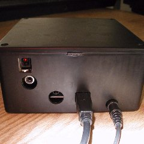
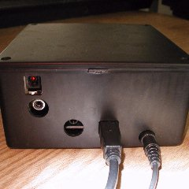
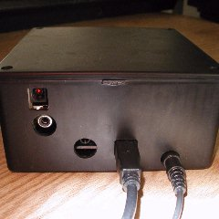

To accomplish this feat, you are provided with a Torx wrench to open your XMPCR unit, another plastic case (with extra pc board) in which to mount your XMPCR pc board, and special connectors that connect to your unit without causing any permanent changes. Wish to later sell your XMPCR in it's original state? No problem. You can return the XMPCR to its original case, and there are no signs that it was ever removed from its original case, because the XMPCR was never physically modified.
Why provide two kinds of digital outputs? Many high-quality sound cards accept S/PDIF Digital Coax input, so this may be the preferred format for many. However, the Digital Optical output may be preferred by those that want true electrical isolation between their XMPCR and their audio input equipment, or high-end audio cards that only accept Optical input. Both digital formats provide you with the exact digital signal that is received from the satellite.
Note#1: The Coax output provides the standard S/PDIF voltage range. TTL level voltage range can be provided upon special instruction, for those that have sound cards that require TTL input.
Front Panel Light: . Specify Green or Blue LED when ordering.
Price: . $100 USD (Introductory price: $85)
(You can also purchase on eBay for $80 USD under seller name 'jfrohwei'. On eBay search for XMPCR.)
Shipping: . $5 USD worldwide shipping - $15 USD Priority/Airmail worldwide shipping
Payment options:
1) Paypal.com (You must have a paypal verified address.)(Send to jeff@devrs.com)
2) Use a Credit Card
3) Western union wire transfer
4) Check in US funds. (Product will be sent after check clears.)
5) Send a money order in US funds to the following address. (International money order in US funds is fine.)
Jeff Frohwein
719 Oakcrest St. #3
Iowa City IA 52246
USA
Returns: You have 30 days to return items for a full refund, minus any shipping costs.
Contact: sales [at] devrs [dot] com [dot] us (Ignore "us". It's used to throw off web-crawling bots.)